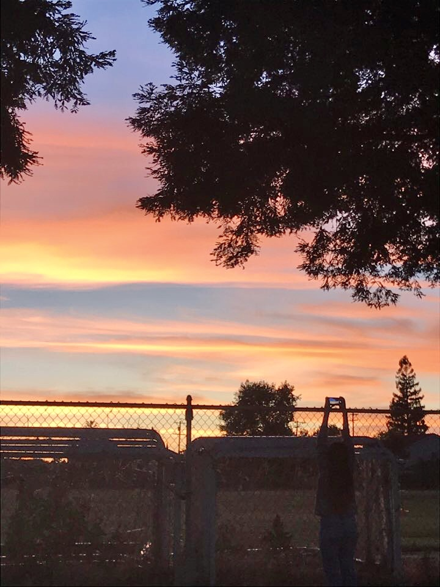

ABOUT

Hello! I'm Jennifer, a second-year student studying Computer Science at UC Berkeley. Since I moved out of Berkeley in March 2020, I've been taking pictures of the clouds and skies on my daily walks around sunset time and this website is my way of looking back on the months of quarantine through the clouds I've seen. Enjoy!